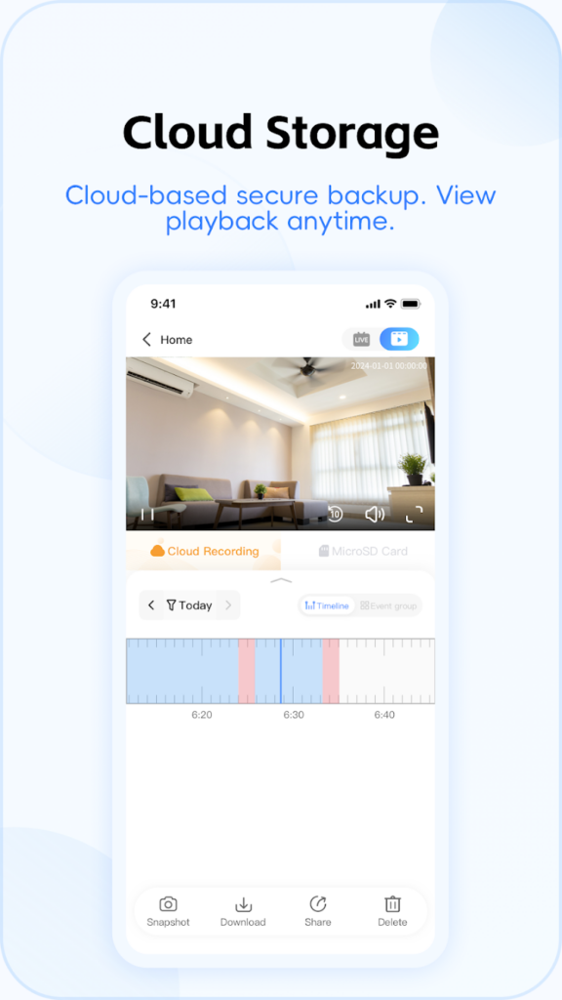
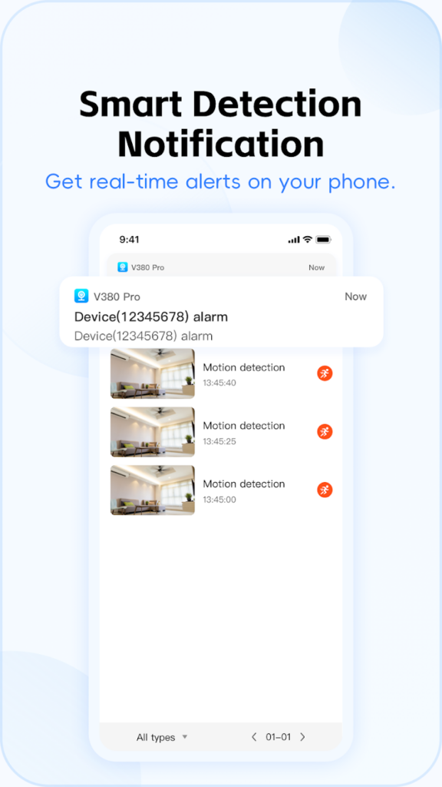

V380 Pro 快问快答：从安装到布防，一篇搞定
V380 Pro 是 V380 系列摄像头的官方配套 App，本文以问答速查的方式整理了用户最常问的几个问题，覆盖兼容性判断、安装配对、实时预览、布防撤防、变焦校准等高频操作。
整理一篇关于 V380 Pro 的快问快答，把踩过的坑和应该注意的细节都写进问题里——你大概率能从中找到自己正在纠结的那个。
V380 Pro 到底是什么？和 V380 老版有啥关系？
V380 Pro 是 V380 系列智能摄像机的官方配套 App，它的官网上有完整的型号列表和功能说明，核心干四件事：远程看画面、控制云台、收报警、存录像。它不支持海康大华等其他品牌，只服务 V380 自家，但覆盖范围很广——从几十块的室内 USB 小方块，到太阳能供电的户外云台，再到插 SIM 卡的工地摄像头，统统走这一个 App 管。
老版本 V380 还有一个旧 App，界面比较老。新设备和新功能（AI 人形、多镜头、新云存储套餐）基本只在 Pro 版上更新，下载的时候看到两个 App 直接选 Pro 就行，别犹豫。

怎么判断我的摄像头能不能连 V380 Pro？
最靠谱的办法：把摄像头翻过来，底部有一个二维码加一串 SN 编号，打开 App 用「添加设备」扫那个二维码，能识别就是兼容的，扫不出来或者提示「未知设备」那基本就不是 V380 系列。
包装上印着 V380 或者底部标签有 XVV、HSC 开头的编号，大概率能连。如果你手里的摄像头是其他品牌，V380 Pro 接不来——别浪费时间尝试了，找对应的官方 App 更省事。
安装配对步骤麻烦吗？第一次上手容易卡在哪？
流程本身不复杂：从官方下载装 App → 注册账号 → 插电让摄像头进入配网状态 → 扫码按提示连 WiFi。但几个地方容易卡住：一是摄像头必须连 2.4GHz WiFi，5GHz 连不上；二是配网时手机要离摄像头近一点，别隔着两三堵墙；三是部分老款摄像头配网时需要先按机身背面的重置键复位。
4G 款和太阳能款的配网逻辑不一样——4G 款插 SIM 卡后直接扫码就能激活，不需要 WiFi；太阳能款如果是第一次用，建议先接市电配网，等电池充到一半再切太阳能模式。
实时预览画面卡顿怎么办？
画面卡顿两边都可能有问题。手机这边信号差就不用说了，换个地方或者切 WiFi 试试。摄像头那边常见的坑：一是路由器带宽不够，多台设备同时跑视频流会互相抢资源；二是 WiFi 信号弱，尤其是室外摄像头离路由器远、中间有墙或者金属遮挡物；三是摄像头本身的编码设置问题——有些旧款默认拉到 4K 但实际带宽撑不住，降一档到 1080P 反而更流畅。
如果只有特定时段卡（比如晚上七八点），大概率是宽带被限速或者路由器负载上去了，不是 App 的锅。
布防和撤防到底是啥意思，为什么要切来切去？
布防 = 开启所有报警检测，撤防 = 关闭。在家时摄像头检测到移动大概率是你自己走动，推报警就是骚扰，所以建议撤防；出门后检测到移动才是真的有人进去了，这时才需要布防，App 会立刻推警报加截图。
操作很简单，设备列表里每台摄像头旁边有盾牌图标——亮着是布防，灰了是撤防，点一下就切。部分版本支持一键全屋布防，出门前扫一眼设备列表确认所有摄像头都亮着再锁门。朝九晚五固定作息的还可以设置定时布防（比如工作日 8:00 自动布防、18:00 自动撤防），摄像头自己判断什么时候该警觉，不用你每次手动切。
变焦画面模糊要怎么处理？
先确认你的摄像头带不带光学变焦——迷你方块、USB 款这种纯数字变焦的，模糊可能只是分辨率不够，校准也救不了。带光学变焦的型号，用久了对焦不准是正常现象，在实时预览页进「设置 → 高级设置」找「校准自动变焦」，点开始后摄像头会自动拉到最远端和最近端各对一次焦，整个过程 10 到 30 秒，别断电别退出 App，进度条走完就好。
校准完还是模糊的话，按这个顺序排查：用眼镜布擦镜头玻璃（积灰和雨滴残留是高频原因）→ 检查安装位置是不是在空调风口旁边（温度变化结雾）→ 降一档分辨率试试（有些旧款最高画质反而软糊）→ 还不行联系售后，可能是镜头机械部分的问题。日常用的时候，在预览画面上点一下你想看清楚的区域，摄像头会自动对那个区域对焦，配合自动校准基本够用了，更细的参数说明可以去v380pro文档对照。

云存储要不要买？免费版和付费版差在哪？
免费版只保留报警截图，录像片段要看就需要订阅。这个取舍看你的使用场景：家里装摄像头主要是看猫看老人，其实本地插 SD 卡存录像就够了，没必要买云存储；但如果是店铺或者安防场景，云存储的优势很明确——摄像头被拿走了、SD 卡被拔了，云端的录像还在，这才是真正的安防备份。
一个实用的搭配：免费版报警推送加 SD 卡本地录像，双重保障省钱又稳。只有确实需要随时随地拉录像片段查的，才考虑上云存储。
V380 Pro 有哪些天然限制，用之前要想清楚？
先说硬约束：必须配合 V380 系列硬件，通用摄像头接不进来；远程查看依赖网络，手机信号差或者家里宽带被限速，画面就卡顿甚至加载不出来；云存储付费；部分国产手机系统对后台推送限制较严，可能出现报警推送不及时的情况。
再说型号差异：PTZ 云台控制只有带云台的摄像头支持，迷你方块和 USB 款是定焦的；AI 人形识别只有 2023 年以后发布的部分新款才有，老款只有基础移动侦测；定时布防功能 2022 年以后的型号基本支持，老款设置里找不到这个入口就是不支持；夜视分红外、白光、双光三种——红外夜里画面黑白，白光是彩色但会亮灯，双光都有但价格更高。
值不值得装？
如果你手上已经有 V380 系列的摄像头，那 V380 Pro 是唯一的选择，装好就能用，没什么好纠结的。但如果你还在选摄像头，建议先确认自己需要的功能（要不要云台、要不要太阳能、要不要 AI 人形识别），再倒推买对应的型号，别买了定焦款回来才想控制云台——不是 App 的问题，是硬件本身不支持。整个产品链的逻辑是：硬件决定功能边界，App 负责把这些功能用好，选对硬件比折腾 App 重要得多。
最后一句：手里有 V380 摄像头就装，准没错；没摄像头先想清楚自己要什么功能再买，别反向决定。另外关于摄像头兼容列表和固件更新的资料，在GitHub、Gitee和GitCode都能查到，哪套顺手看哪套。